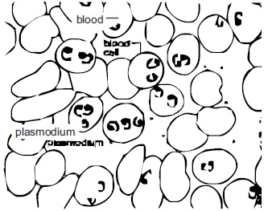
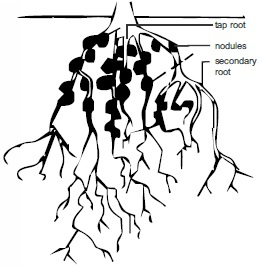
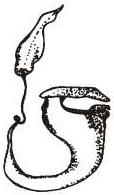

All animals depend on plants directly or indirectly for their foods. In other words
they feed on already made food. Animal nutrition has to do with the sum total of the
processes involved in food intake,digestion, absorption, and its utilization.
Food and its uses
Food is any substance which when taken in, serves as a source of energy or
source of new protoplasm for growth and repair of worn out body tissues. Animals generally
eat food to grow, for health and energy and to replenish or repair worn out body tissues.
Classes of Food Substances
Food substances are divided into six classes: -
Carbohydrates
Fats and oil (Lipids)
Protein
Mineral Salts
Vitamins and
Water.
The first three together with nucleic acid constitutes the basic building block of an
organism.
FoodClass
Chemical Constituent/Forms.
Sources
Uses
1. Carbohydrates
Made up of: Carbon, oxygen and hydrogen. e.g. sugars, starch, cellulose glycogen
Cassava
Yam
Rice
Bread
For energy.
2. Fats and oil
Made up of:
Cabon, oxygen, hydrogen e.g fatty acids and glycerol.
Egg yolk, Margarine Palm oil Vegetable oil etc.
More energy
than
carbohydrates,
part of oell
membrane,
conduction of
nerve impulses,
insulation of
the body.
Building new
protoplasm for
growth;
repairing ofcells,
controlling of
bio-chemical
reactions.
4. Mineral Salts
Calcium, sodium,
Chloride, potassium,
Magnesium, iodine, Iron
Milk, salt,
Fruits,
chocolate,
Sea fccd,
Meats.
Tooth and bone
formation,
transmission
of nerve
impulses,
regulation of
heart beat etc.
5. Vtamins
Co enzymes (substances
that help enzymes in
their activities.
A, B, C, D, E and K)
Egg, Meat,
Yeast, citrus
fruits,
Vegetables,
Fish etc.
Healthy
Qmwih.
Healthy skin,
Balsam
(carbohydrate)
metabolism,
Proper nerves
heart and
muscle
functioning,
healthy eyes
etc.
6. Water
Hydrogen and Oxygen
Rain water
Spring water
90% content of
protoplasm;
90% plasma
Content;
required for
body
biochemical
activities,
helps for food
digestion,
excretion,
circulation of
blood, formation
of liquid, in
the eye etc.
Diet
The meal someone takes in daily constitutes his or her diet. A balanced diet is a
meal, which contains all the six classes of food in their right proportions. Malnutrition,
which results due to starvation or not eating balanced diet, can lead to food
deficiency diseases.
Enzymes
For food substances to be utilized in a Holozoic animal, there is need for
digestion. Digestion of foods occurs with the help of enzymes. Enzymes are organic
catalysts, which are produced by specialized cells in organisms. Enzymes that are
involved in food digestion are called digestive enzymes.
Modes of nutrition: - Two Principal Modes
1. Autotrophic mode of nutrition :
A type or mode of nutrition in which an organism produces its own complex
organic food substances from simple inorganic substances e.g. photosynthesis
and chemosynthesis.
2. Heterotrophic mode of nutrition :
A mode of nutrition in which an organism takes in or feeds on already made
complex food substances and is incapable of making its own food from simple
inorganic substances.
Other modes of nutrition include parasitism, symbiosis, saprophytism
and insectivorous plant
fig9.4:

fig9.5:

GENERAL QUESTIONS
1.Identify fig 9.1 and fig 9.2. What mode of nutrition in the organs is applicable
2. State the three classes of energy producing nutrients
3.(a) What do you call the amino acids which unless the body has them at the same time it cannot make protein and
(b) how many are they in number
4.
Cellulose is important in the diet because it provides
Roughage in food which aids digestion
Give protein to the body
body building nutrients
5. When hydrogen sulphide is not available, colourless sulphur bacteria oxidize sulphur to sulphates according to the equation
2S + 2H20 + 302colourless sulphur bacteria
2H2SO4 + energy
This is an example of
mode of nutrition.
6. Write three chemosynthetic organisms you know
(i) Earthworm (ii) Sponges (iii) Hydra
(i) Nitrosomonas (ii) Nitrobacker (iii) iron bacteria
(i) Euglena (ii) Yeast (iii) Mushroom
7. Write two examples of Ectoparasites and two examples of Endo parasites
you know
Teacher's attention required
(i). Label the diagram in fig 9.6
(i) Scolex (ii) Suckers (iii) Neck (iv) Proglotide
(i) Head (ii) Jaw (iii) Mouth (iv) Appendages
(i) Eye (ii) Mouth (iii) Thorax (iv) Joint
.
(ii.) State how i ii and m are adapted to parasitic life in its host.
Teacher's attention required
8. Cellulose digesting bacteria in the alimentary canal of a herbivore is an example of
9. Use the table below to answer question 10 just fill the gaps with the right answers.
Enzymes
Source
Food it can digest
Result of its action on the food (i.e. the action of the enzyme)
i
Ptyalin
Salivary gland
Starch
Maltose
ii
Lipase
Pancreatic Juice
Fats and Oil
Fatty acids and glycerol
iii
Pepsin
Intestinal wall glands
Protein
Peptides
iv
Maltase
Intestinal wall
Maltose
Glucose
v
Rennin
GastricJuice
Milk
Curdled Milk
FILL IN THE GAPS IN QUESTION 11
Vitamins
Source
Funcfion
Symptoms
i
A
Egg yolks, butter, fish,
liver oil
Proper functioning of
epithelial tissue. Clear vision
Night blindness, changes in
epithelial cells
ii
B,(thiamin)
Yeast, Ricebran
Beans, Groundnut, Liver
Carbohydrate metabolism,
proper heart and
nerve function
Beriberi;
Stunted growth
iii
C (Ascorbic acid)
Citric fruit, leafy vegetable
for healthy connect tissue of dentine
Scurvy
iv
D
Egg, Yolk, Sun Ultra Violet rays
calculation and hardening of bones
Poor tooth development, rickets
v
K
Liver Vegetables
Blood clotting and liver function
slow clotting of blood
PRACTICAL ACTIVITIES
PROBLEMS OR FACTORS UNDER INVES TIGATION: -
Investigating the presence of carbohydrates, proteins, fats and oil in different food substances.
Experiment 6:
To test for the presence of certain food nutrients.
Materials/Apparatus needed:
Five test tubes, cooked rice, bread, glucose, sucrose or a complex sugar, distilled water, iodine solution, Benedicts solution, Fehling
solutions A and B, Hydrochloric acid, source of heat through water bath, paper tapes.
Experimental Procedure:
Prepare a solution (not true solution) of the cooked rice, bread in separate test tubes and label them as ExperimentA and B
respectively.
Dissolve the glucose and the complex sugar (sucrose). each in separate test tubes using the distilled water. Label each of them as
Experiment‘ C and D respectively.
Prepare another complex sugar solution in a test tube with the sugar provided and label it Experiment E.
Then carry out the tests as tabulated below, and record your observation and conclusions in the spaces provided.
Experiments
Observations
Conclusion
i
A + Benedicts solution in equal volume
ii
A+ Iodine solution in few drops.
iii
B + Iodine solution.
iv
C + Benedicts solution + Heat undera boiling water bath.
v
C + Fehling solutions Aand B in equalvolume + Heat as in iv.
vi
D + Benedicts solution.
vii
D + Fehling solutions Aand B + Heatas in iv.
viii
Take E to a boiling water bath and subjectit to heat after adding dilute HCLinto it.
ix
To Experiment viii, add few drops of causticsoda.
x
Add Benedict’s solution and heat under aboiling water bath.
Fill in the food substance involved in the experiments in the table below also write in your observation and conclusion.
Food Substance
Test (Experiment.)
Observation
Conclusion
1
Add about 1cmof dilutesodium hydroxide to about32cmof Specimen Aandshake, then add 1 to 2 drops ofcopper (ii) tetraoxosulphate(iv) solution and shake
2
Smear small amount ofspecimen B or pour drops ofsubstance of specimen c ona white paper or boil withosmic acid.
3
To the test tube which containssmall amounts of specimen A,add million reagent and shakewell then heat.
4. In your biology practical notebook, similarly tabulate but fill in other methods of experimental test to identify the presence of the food
substances you wrote down.
5. Why is Sudan (iii) test no longer popular or not very suitable for identifying oil in a food substance e.g. Palm oil?
6. What colour do you obtain when a biuret test is carried out on a pepton solution?
Consider and observe the diagrams in figure 9.3, 9.4, 9.5, and 9.6 in page 72 and 73 carefully and use them to answer questions 7
7a. Which of these organisms has parasitic mode of nutrition
Teacher's attention required
7b. Which of them is endoparasite
Teacher's attention required
7c.Figure 9.4 shows red blood cells with plasmodium parasite inside. What harmful effect does this parasite have to man
Teacher's attention required
8a. Figure 9.5 shows a feeding relationship that takes place in root nodules of leguminous plants. Write the name of the feeding
relationship
8b. State two other examples of the feeding relationship
Teacher's attention required
fig9.7:

9b. What mode of nutrition does the plant exhibit
9c. Write the names of two other plants that carryout the same feeding habit
Nutrition Practical Questions S S C E
1. A food substance was put in two test tubes labelled (i) and (ii). In test tube (i). Fehling’s solution A and B were added and
the mixture warmed. A negative result was obtained. In test tube II, dilute hydrochoric acid was added and the mixture was
boiled, after which few drops of sodium hydroxide were added. Then fehling’s solutions A and B were added. A positive
result was obtained in test tube (ii) after warming.
What colour should indicate a positive result in test tube II?
What food substance must have given the positive result in test tube ll?
What role did dilute hydrochloric acid play in the test tube ?
Teacher's attention required
Why was sodium hydroxide added to test tube ll?
Teacher's attention required
Why was a negative result obtained in test tube l?
Teacher's attention required
Suggest the food substance in the original samples tested.
June 1995 Question (answer in your biology practical note book)
2. In the test for starch, why is the green leaf boiled in
(a) Water
(b) Alcohol?
Teacher's attention required
June 1994 Questions
3. you are provided with specimens A and B. (a) (I) cut a piece of specimen A. put a drop of iodine on it. Record your observation
(ii) From your observation what food nutrient does specimen A contain? (iii) Give reasons for your answer. (b) put a drop of
specimen B on the top right hand corner of your question paper, using a glass rod spread the drop. Clean the glass rod, to remove
every trace of specimen B. then put only a drop of water on the top left hand corner of your question paper, using a glass rod. Spread
the drop. Allow both drops of specimen B and water to dry. (I) Record your observation. (ii) from your observation what food nutrient does specimen B contain? (iii) Give reasons for your answer. (c) (I) Put 4cm3 of specimen B in a test tube and add 5cm3 of water.
Teacher's attention required
Record your observation. (ii) shake the contents of the test tube thoroughly and leave it for 3 minutes to settle. Record your
observation. (d) (I) Add 2cm3 of sodium hydroxide to 5cm3 of specimen B in a clean test tube. Shake thoroughly and observe the
mixture. Record your observation. (ii) What substance in the alimentary canal plays the same role during digestion in mammals as
sodium hydroxide in this experiment?
Teacher's attention required
June 1993 Questions(answer in your biology practical note book)
Section A
4. State the importance of the following elements to plants: (a) iron; (b) phosphorus; (c) calcium; (d) potassium.
Teacher's attention required
5. Give one example each of the following:
Teacher's attention required
plant parasite;
saprophytic plant;
carnivorous plant;
6. List two structural modifications each of one named bird which feeds on:
Teacher's attention required
nectar
flesh;
Section B
7. The amount of starch hydrolysed by the enzyme ptyalin over a period of time at three different temperatures are given in
the table below.
Time in minutes
Volume of starch Hydrolysed at different temperatures
15oc
25oc
45oc
5
10.0cm3
21.5cm3
40.0cm3
10
20.0cm3
40.0cm3
6.50cm3
15
30.0cm3
56.5cm3
10.0cm3
20
40.0cm3
68.5cm3
17.0cm3
25
50.0cm3
70.0cm3
19.0cm3
Placing time on the horizontal axis and the amount of starch hydrolysed on the vertical axis, plot the data given for the different
temperatures on the same graph.
from the grahp deduce the effect (s) of temperature on the action of ptyalin on starch.